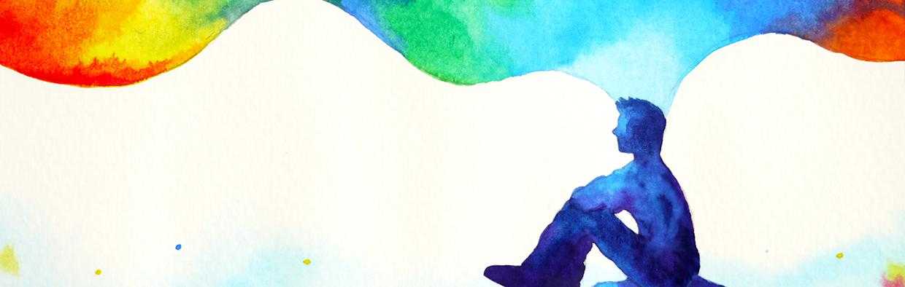
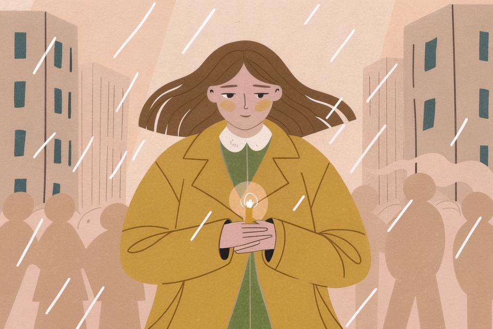

FOCUS • Lutto nell’infanzia
Una serie audio in 7 parti dedicata al lutto infantile, alla costruzione del significato, alle emozioni, al corpo e alla presenza dell’adulto nell’accompagnare il dolore.
Un percorso delicato tra psicologia, relazione, spiritualità e sviluppo infantile.
Perché parlare di lutto nell’infanzia 🎧
Un’introduzione alla serie: perché il lutto infantile non riguarda soltanto la perdita, ma anche il modo in cui il bambino costruisce significato, sicurezza e continuità nel mondo.
Il sistema interno di significato
Come il bambino costruisce sicurezza, fiducia e significato attraverso le relazioni. Un episodio dedicato all’attaccamento, alla resilienza e al modo in cui il lutto scuote le mappe interiori dell’infanzia.
Il linguaggio
Il bambino ascolta molto più delle parole. Silenzi, toni, corpo e presenza emotiva diventano strumenti fondamentali nell’accompagnamento del dolore.
Il pensiero astratto
Come i bambini comprendono la morte? Un episodio dedicato allo sviluppo cognitivo, alla concretezza del pensiero infantile e all’importanza di parole semplici, vere e contenitive.

EPISODIO 4Le emozioni
Rabbia, agitazione, silenzio, risate improvvise: le emozioni infantili nel lutto spesso parlano attraverso travestimenti. Un episodio sul contenimento emotivo e sulla co-regolazione.
Il corpo e i sintomi
Quando il dolore non riesce a diventare parola, spesso il corpo parla. Un episodio dedicato ai sintomi, alla psicosomatica infantile e al ruolo regolativo delle routine e della presenza adulta.

CONCLUSIONERestare accanto 🌿
Una chiusura dedicata alla resilienza, alla continuità dei legami e alla possibilità di attraversare il dolore senza sentirsi soli.